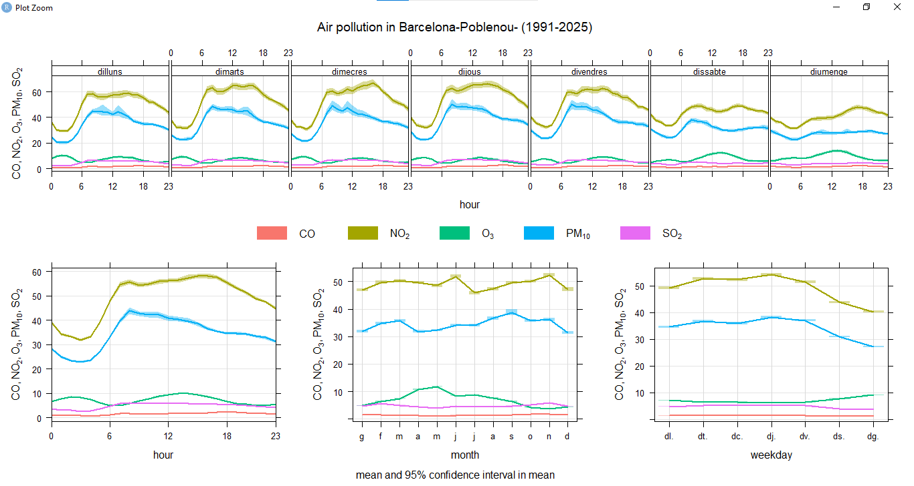
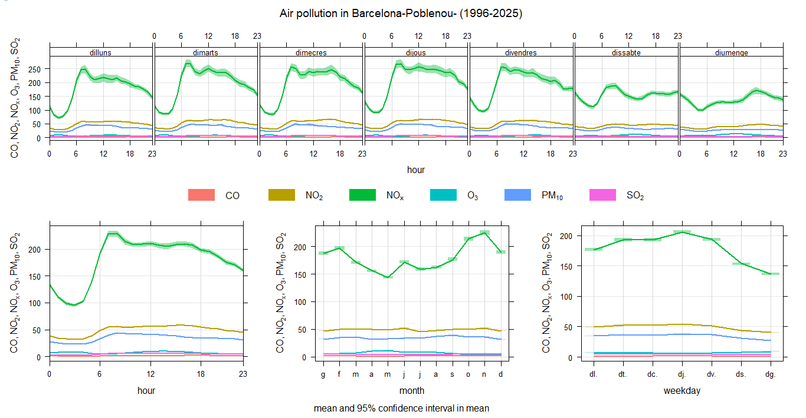

AIR POLLUTION ANALYSIS IN BARCELONA (POBLENOU)
GRAPHIC 1: GENERAL TIME VARIATION

Pollution and Activity: NO₂ and PM₁₀ pollutants show clear peaks during hours of peak human activity, especially in the morning and during the day, linked to traffic.
Weekend Trends: Pollution levels are lower on weekends, showing the influence of traffic and work activity.
Seasonal Changes: Ozone (O₃) peaks in spring and summer due to higher solar radiation, while NO₂ and PM₁₀ are higher in winter.
Stable Pollutants: CO and SO₂ remain at low levels throughout the year.
GRAPHIC 2: DETAILED PATTERNS AND NOx IMPACT

Daily Peak: We can see a traffic impact, the air quality follows a strict human activity cycle. A massive spike occurs every morning at 8:00 AM, reaching levels above 200 µg/m³. This coincides with the morning commute, showing that the neighborhood's air is most hazardous during the start of the workday.
Weekly Pattern: Because of work and rest time, pollution builds up throughout the week, peaking on Thursday. There is a drastic 35% drop in pollutants on Saturdays and Sundays. The air quality is directly tied to the working calendar; without commercial and commute traffic, the area's air improves significantly.
Secondary Pollutants: Particulate Matter (PM₁₀) remains steady but elevated, requiring constant monitoring. Sulfur Dioxide (SO₂) and Carbon Monoxide (CO) are very low, suggesting that modern fuel standards have successfully eliminated these specific industrial threats.
GRAPHIC 3: Nitrogen Dioxide (NO₂) EVOLUTION HEATMAP

The impact of daily traffic: The graph shows a very marked orange and red horizontal band between 8:00 a.m. and 8:00 p.m. in all the years analysed. This shows that nitrogen dioxide pollution is not constant but is closely linked to human activity and working hours, reaching its most critical levels during peak traffic hours.
The deterioration of air quality (1998-2005): A negative trend in air quality can be observed as the years progress, especially between 2003 and 2005, when the red colors become much more intense and frequent. This trend suggests a progressive increase in traffic or industrial activity in the Poblenou area during that period, raising concentrations to dangerous levels.
The effect of winter temperature inversion: There is a clear seasonal pattern, with the months of November, December, and January showing the highest levels of pollution. This phenomenon is due to temperature inversion in Barcelona, where cold air is trapped near the ground, causing pollutants to accumulate in the air we breathe.
The reduction due to holidays in August: In almost every year, a lighter or greenish vertical strip can be seen during August. This ‘gap’ in pollution coincides with the holiday period, confirming that when residents leave the city and traffic volume decreases, nitrogen levels drop immediately.